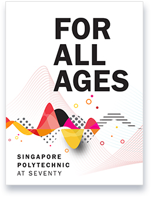
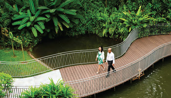

Singapore Polytechnic (SP), known for being the first polytechnic in Singapore, was first established in 1954 on Prince Edward Road. By 1974,the construction of the campus on Dover Road began and was completed in 1978. On 7th July 1979, the campus on Dover Road was officially opened by Prime Minister Lee Kuan Yew.
POLY50 celebrates SP's 70th anniversary! This year, participants will enjoy an exciting race focused on sustainability. We aim to inspire everyone to support a greener future. For the first time, the whole campus will be closed for a full round-campus relay race.
Sign Up
We have released a commemorative book titled "For All Ages, Singapore Polytechnic At Seventy" in honor of SP's 70th anniversary. It covers some of the people and events that have molded us over the years.
Download the BookWe celebrated our 70th anniversary with a music festival at SP. Despite the rain, thousands of attendees danced, especially during performances by local artists Marian Carmel, Rangga Jones, and Evan Low. The festival highlighted the importance of youth mental health and showed that mental health and music can go hand in hand.
Learn MoreBeing life-ready, work-ready, and world-ready is our mission, which embodies the essence of SP's DNA of becoming "future-ready." This passage from our commemorative book highlights three areas in which SP is setting the standard for progress:
Personal/Work Life
Industry Disruptions

Global Shifts